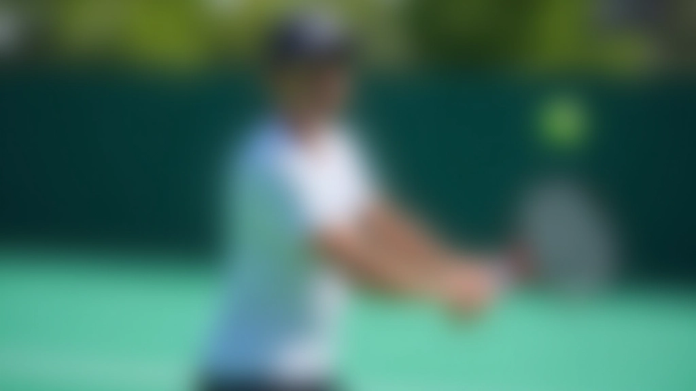

أساسيات الضربة الخلفية باليدين للمبتدئين
تعلم الخطوات الأساسية والموضع الصحيح والقبضة المناسبة
تعرف على الأخطاء الأكثر شيوعاً في الضربة الخلفية باليدين وطرق عملية لتصحيحها بسهولة


فريق التحرير والمراجعة
كتبه فريق تحرير أكاديمية الضربة الخلفية، متخصص في تقديم إرشادات عملية وسهلة المتابعة للاعبين والمدربين.
معظم لاعبي التنس يقعون في أخطاء متكررة عند تعلم الضربة الخلفية باليدين. المشكلة أنهم لا يلاحظونها في البداية — الخطأ يبدو طبيعياً. لكن مع الوقت، هذه الأخطاء تصبح عادات سيئة يصعب تصحيحها.
الخبر الجيد؟ معظم هذه الأخطاء يمكن تصحيحها بسهولة إذا عرفت أين تبحث. في هذا الدليل، سنركز على الأخطاء الخمسة الأكثر شيوعاً وكيفية إصلاحها بخطوات واضحة.
النقطة الأساسية: تصحيح الخطأ مبكراً أسهل من محاولة تغيير العادة السيئة لاحقاً.
أول خطأ يرتكبه معظم المبتدئين — قبضة مشدودة جداً على المضرب. تشعر أنك بحاجة إلى الإمساك بقوة للسيطرة، لكن هذا يقلل من قوتك فعلياً.
عندما تشد القبضة بقوة، تتوتر عضلات الساعد والكتف. هذا يمنع الحركة السلسة ويقلل من السرعة. بدلاً من ذلك، تريد قبضة متوازنة — قوية بما يكفي للسيطرة، لكن مريحة بما يكفي للتحرك بحرية.
الكثير من اللاعبين يقفون بطريقة خاطئة عند تنفيذ الضربة الخلفية. تراهم يقفون بشكل مستقيم جداً أو ينحنون للأمام بشكل كبير. هذا يؤثر على التوازن والقوة.
الموضع الصحيح يتطلب قدمين متباعدتين بعرض الكتفين تقريباً. الركبتان منحنيتان قليلاً. الظهر مستقيم لكن ليس صارماً. هذا الموضع يعطيك الثبات والقوة معاً.
يرى المدربون هذا الخطأ طوال الوقت — لاعب ينتظر حتى آخر لحظة قبل إعادة تحضير المضرب. بعد الضربة السابقة، يجب أن تعيد تحضير المضرب فوراً، وليس عندما تراها الكرة تقترب منك.
الاستعداد المبكر يعطيك وقتاً أطول لتصحيح موضعك. يُمكّنك من الاقتراب من الكرة في الوقت المناسب. يجعل ضربتك أكثر سلاسة وقوة. تخيل أنك تستعد قبل أن تضرب الخصم الكرة — ليس بعده.
مارس تمريناً بسيطاً: اضرب الكرة، ثم أعد تحضير المضرب فوراً. كرر هذا 20 مرة في الجلسة. سيصبح هذا عادة تلقائية بسرعة.
نتائج التعلم تختلف من شخص لآخر. كل لاعب يتقدم بسرعة مختلفة بناءً على خبرته السابقة والممارسة المنتظمة. التصحيح يتطلب الصبر والممارسة المستمرة.
بعض اللاعبين يتوقفون عن الحركة بعد لحظة اصطدام المضرب بالكرة. هذا خطأ كبير. المتابعة جزء حيوي من الضربة — تضيف قوة وتحكماً وتوجيهاً.
تخيل أن المتابعة هي الجزء الأهم. بدونها، تفقد نصف قوتك. المتابعة الجيدة تعني استمرار الحركة بسلاسة بعد ضرب الكرة. لا تتوقف فجأة.

الكتفان مهمان جداً في الضربة الخلفية. بعض اللاعبين يستخدمون فقط أذرعهم لضرب الكرة — خطأ شائع جداً. هذا يقلل من القوة بشكل كبير.
القوة الحقيقية تأتي من دوران الجسم بالكامل. عندما تستعد للضربة، ادر كتفيك نحو الخصم. هذا يزيد من قوة الضربة ويحسن التحكم. يبدو بسيطاً، لكن الفرق كبير جداً.
قف مع يد على صدرك والأخرى تمسك المضرب. مارس دوران الكتفين للخلف والأمام دون ضرب كرة. قم بهذا 15 مرة يومياً. بعد أسبوع، ستشعر بالفرق عندما تضرب الكرة فعلياً.
هذه الخمسة أخطاء مسؤولة عن معظم مشاكل الضربة الخلفية. الخبر الجيد أنها سهلة الإصلاح إذا ركزت عليها بانتظام. لا تحاول تصحيح كل شيء في نفس الوقت — اختر خطأ واحد في الأسبوع.
ابدأ بالقبضة. مارسها لمدة أسبوع حتى تشعر بالراحة. ثم انتقل إلى الخطأ التالي. بهذا النهج التدريجي، ستصبح ضربتك الخلفية قوية وموثوقة خلال شهرين.
هل تريد تعلم المزيد عن تحسين ضربتك الخلفية؟
اقرأ دليل تحسين القوة والسرعة
تعلم الخطوات الأساسية والموضع الصحيح والقبضة المناسبة

اكتشف التمارين والتدريبات لزيادة قوة وسرعة ضربتك

تعلم كيفية إضافة التأثيرات مثل الدوران العلوي والسفلي